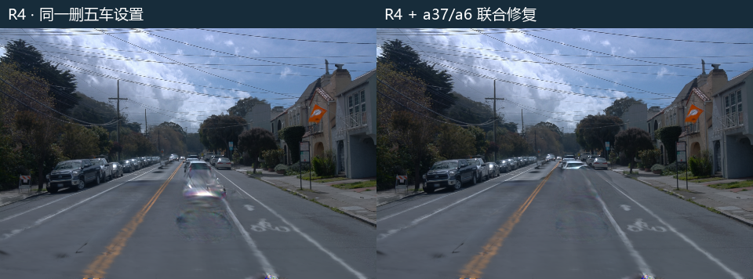
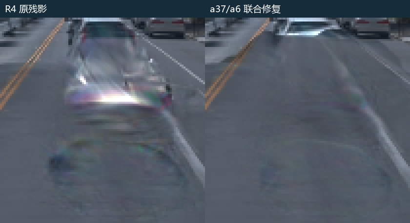
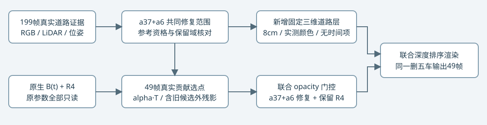
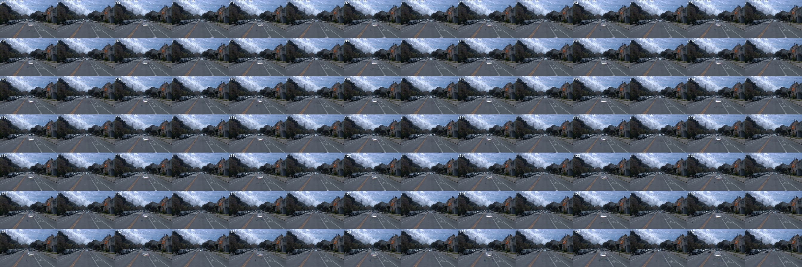

R4 · a37 / a6 联合残影修复
2026-11-03 · scene-008 · 原生v41 B30k + 冻结R4 · 联合优化1000步
按用户指定以R4为底，联合处理a37和a6。raw105中央大块亮色车形残影明显消退；原a5阴影指标基本保持。后半段部分a6区域缺少合格道路参考，远处仍有残留，不能宣称完整49帧全部清除。人工质量验收保持待定。
同一权重与删车设置
两列都使用同一份原生B30k与R4检查点，渲染时不加入动态分支，删除集合为 a5 / a26 / a18 / a6 / a37。原模型及R4权重没有被覆盖。只移除动态分支，不会自动移除已写入静态层的车形外观；此前修复仅针对a5/a37的道路范围，a6没有得到独立有效覆盖。


局部采用最近邻放大，没有后期锐化、图像修补或生成内容。两车在同一次优化中处理，没有单独训练a6。
排查结果
原R4的raw105 a6轮廓扩展区共1625像素，仅54个像素有道路拟合监督，1571个像素被要求保留R4。该范围道路层的平均alpha·T只有0.01728。它主要落在原a5/a37道路参考范围之外，所以旧优化既缺少替代道路，也无法消除相应静态残影。这里的轮廓扩展是编辑输入，不是静态高斯语义归属真值。
本轮重新核对全部49帧联合范围的真实光栅贡献，得到268079个附加门控候选，其中229365个不在原R4候选集中。新增39938个道路查询格点中，19264格有至少3个颜色一致的实测来源，其余20674格保持参考未知，没有用空间插值制造新颜色监督。

联合目标由a37与a6各自有效道路误差等权组成，同时保留范围外R4和其他车辆。新增道路的位置、颜色与覆盖固定，只学习附加静态opacity门控；原R4门控、道路层及原B的时间变化全部保留。没有加入独立阴影层或图像硬路由。
相同有效参考域结果
| 联合修复域 | R4 MAE | 联合修复 MAE | 下降 | 分母 |
|---|
| a6 | 0.08145 | 0.01380 | 83.1% | 49帧 / 55,263样本 |
| a37 | 0.03041 | 0.00697 | 77.1% | 49帧 / 622,682样本 |
线性RGB、按像素样本加权；同一参考和掩码同时测R4/联合版，49帧均改善。这里是道路外观/车形残影代理，不能与历史“阴影代理MAE”混用。全部199帧均为BUILD，49帧不是独立测试集。
| 沿用原阴影代理 | R4 | 联合版 | 原固定分母 |
|---|
| a5 | 0.00870325 | 0.00870315 | 18帧 / 3,712样本 |
| a37 | 0.01069466 | 0.00959113 | 49帧 / 20,813样本 |
范围外相对R4的sRGB平均MAE为 0.000469，最差帧均值 0.000884。由于高斯支撑跨边界，不能宣称范围外逐像素零变化。
完整49帧同步检查
R4R4 + a37/a6 联合修复

49帧总览，每格左R4、右联合版

未覆盖区域与证据边界
| a6范围 | 像素 | 有合格参考 | 未进入颜色拟合 |
|---|
| raw89 | 1942 | 1631 | 311 |
| raw105 | 1934 | 1503 | 431 |
| raw113 | 1709 | 1219 | 490 |
| raw137 | 920 | 349 | 571 |
后半段a6投影到更远的道路，部分位置在199帧中仍缺少合格观测，raw137可用参考仅349/920像素。该区域仍能看到远处残影，没有把“没有监督”写成“修复成功”。新的8cm格点使用测量支持的固定道路表面，没有声称得到了独立密集几何真值；候选集合也不是a6/a37高斯归属标签。
验证、计算与回放
正式1000步约 140.5秒，CUDA分配峰值 4.10GiB。另有真实GPU短程32步、两次恢复后各1步，实际新增1034次更新；与此前10204次合计11238。完整加载参数、Adam、采样器及全部RNG后，三锚PNG逐字节一致；三锚R4底图也与原报告逐字节相同。49帧视频完整解码。使用回放包内最小R4依赖在新命名空间恢复后，全部49帧PNG也逐字节一致。
关闭附加修复逐像素复现R4（最大差0）；新增道路固定相机时间差0，原静态仍保留时间变化。原B及R4只读。GPU按用户要求保持开启，没有关机动作。human_verdict=null，quality_accepted=false；failure_ledger_refs=[V82-F01,V82-F06]，failure_ledger_delta=none。
全部逐帧指标与执行收据 · 199帧证据与覆盖分母 · 真实贡献候选 · 执行合同 · 最终联合addon · 入口源码 · 完整回放包已另行保存在用户本地与远端
远端：/root/autodl-tmp/drivingeditor_repro/campaign/shadow_a37_a6_r4_20261103_r1
回放：python source/joint_runtime.py --output restored_review --resume formal/checkpoint001000.pt --evaluate回放包包括联合派生输入、完整状态以及联合回放所需的R4依赖。仍需原始B四份权重、V3坐标bundle及原Python/CUDA环境。原始传感器输入和旧现场继续保留远端。